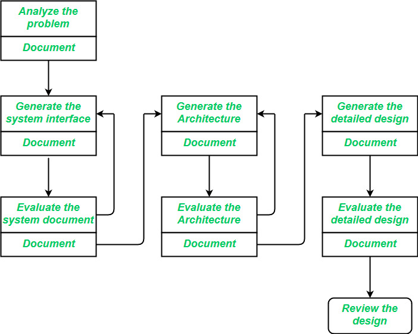

5.2 Software Design Process (Set 1 & 2)
The design phase of software development deals with transforming customer requirements — as described in the SRS (Software Requirements Specification) — into a form that can be implemented using a programming language. It is the bridge between what the system must do (requirements) and how it will be built (implementation).
What is the software design process?
The software design process is the phase where developers plan how to turn a set of requirements into a working system. Think of it as a blueprint for the software: instead of going straight into writing code, the team breaks complex requirements into smaller, manageable pieces, designs the system architecture, and decides how everything will fit together and work.
The design phase takes the SRS as input and produces the Software Design Description (SDD) as output (see §5.1). The process can be understood at two complementary levels: the three design levels (Set 1) and the design activities and deliverables (Set 2).
Set 1 — Three levels of design
The software design process is divided into three levels or phases of design, each at a different level of abstraction. Higher levels hide internal detail; lower levels expose it progressively.

1. Interface design
Interface design is the specification of the interaction between a system and its environment. This phase proceeds at a high level of abstraction — the internal workings of the system are completely ignored and the system is treated as a black box. Attention is focused on the dialogue between the target system and the users, devices, and other systems with which it interacts.
- The people, other systems, and devices that interact with the system are collectively called agents. The design problem statement produced during problem analysis should identify these agents.
- Incoming events/messages: Precise description of events in the environment, or messages from agents, to which the system must respond.
- Outgoing events/messages: Precise description of the events or messages that the system must produce.
- Data formats: Specification of the data, and the formats of data, coming into and going out of the system.
- Ordering and timing: Specification of the ordering and timing relationships between incoming events or messages, and outgoing events or outputs.
2. Architectural design
Architectural design is the specification of the major components of a system — their responsibilities, properties, interfaces, and the relationships and interactions between them. The overall structure of the system is chosen, but the internal details of major components are still ignored.
- Architectural design adds important details ignored during interface design. Design of the internals of major components is deferred until the detailed design phase.
- Gross decomposition of the system into major components.
- Allocation of functional responsibilities to components.
- Component interfaces — how components connect and exchange data.
- Non-functional properties: Component scaling, performance, resource consumption, and reliability.
- Communication and interaction between components.
- At this level, designers focus on coupling and cohesion between modules rather than internal module logic (see §5.10).
3. Detailed design (low-level design)
Detailed design is the specification of the internal elements of all major system components — their properties, relationships, processing, and often their algorithms and data structures. See also §5.5.
- Decomposition of major system components into program units.
- Allocation of functional responsibilities to units.
- User interfaces at module level.
- Unit states and state changes.
- Data and control interaction between units.
- Data packaging and implementation, including scope and visibility of program elements.
- Algorithms and data structures.
Set 2 — Design activities and deliverables
During the design phase, the following items are designed and documented:
- Different modules required and their responsibilities.
- Control relationships among modules (which module calls which, and under what conditions).
- Interfaces among different modules (parameters, return values, shared data).
- Data structures used within and between modules.
- Algorithms to be implemented within individual modules.

Preliminary (high-level) design
- The problem is decomposed into a set of modules; control relationships and interfaces among modules are identified.
- The outcome is called the program architecture.
- Representation techniques: structure charts and UML diagrams (see §5.7, §5.16).
Detailed design
- Each module is examined in detail to design its data structures and algorithms.
- The outcome is documented as a module specification document.
Software design phases (activity sequence)
The actual software design process moves from one end to the other — from understanding requirements to a complete, implementable design. The following phases are typically followed in sequence:

1. Understanding project requirements
Before jumping into design, the team must understand what users need, what the business goals are, and any potential challenges. This understanding sets the foundation for a design that meets both user and business needs.
2. Research, analysis, and planning
The team gathers data through methods such as interviews, surveys, and focus groups. This produces a clearer picture of what users want and allows the team to design with the user in mind.
3. Designing the software
The team creates visual elements — wireframes, user stories, and flow diagrams — to map out how the system will work. Prototypes are created and fine-tuned based on feedback to ensure the design is moving in the right direction.
4. Technical design
After gathering feedback, the team produces a thorough technical document that outlines exactly how the software will be implemented, including specific components and how they will work together.
5. User interface design
The focus shifts to usability. UI designers work on visual elements, navigation, and overall user experience to ensure the interface is intuitive and friendly. See §5.17.
6. Prototyping
Prototypes visualise the design and functionality before full development begins. These range from simple low-fidelity wireframes to fully interactive high-fidelity models, depending on the stage of development.
Elements of software design
Good software design is built on several core elements that work together to create an effective system.

- Architecture: The conceptual model that defines the structure, behaviour, and views of a system. Flowcharts and structure charts can be used to represent architecture. A solid architecture ensures the system is flexible, stable, and easy to maintain over time.
- Modules: The building blocks of the system — each handles a specific task or feature. Breaking a system into smaller modules makes it easier to develop, test, and maintain. A combination of modules makes up the complete system.
- Components: Groups of related functions that provide a particular capability. Components are made up of modules. Organising the system into components keeps the code clean and makes the system more adaptable.
- Interfaces: The shared boundary across which the components of a system exchange information and interact. Interfaces define how modules and components connect without exposing internal implementation.
- Data: Data is at the heart of any system. This element covers how information is stored, accessed, and shared — the management of information and data flow throughout the system.
How software design fits into the SDLC
Software design comes after project requirements are complete and before the actual development (coding) phase begins. In the broader SDLC, the sequence is:
- Requirements phase: User needs are captured and documented in the SRS.
- Design phase: The team uses tools such as wireframes, data flow diagrams, and UI designs to map out how the system will work — drawing the roadmap for how everything will come together.
- Development phase: After design is approved, the actual coding and implementation begins.
Design is therefore the critical planning step that converts the SRS into an implementable blueprint, reducing rework and guiding developers during construction.
Software design principles (overview)
To ensure software is easy to manage, maintain, and update, the following principles should guide the design process. Full coverage is in §5.3.
- Modularity: Break software into smaller, independent modules — each handling a specific task — so modules can be tested, maintained, and updated without affecting the entire system.
- Coupling: Minimise dependencies between modules so that changing one module does not impact others, making the software more flexible.
- Abstraction: Simplify by hiding complexity and showing only essential features, making the software easier to use and understand.
- Anticipation of change: Design with future updates, new features, and new technologies in mind.
- Simplicity: Keep designs clean and efficient — simple designs have fewer errors and are easier to maintain.
- Sufficiency and completeness: Meet all required functions without unnecessary extras — avoid gold-plating features not in the specification.
Tools for software design
Many tools make the design process easier and more efficient — whether working on wireframes, prototypes, or documentation. Popular tools include:
- Figma — collaborative UI/UX design and prototyping.
- Balsamiq — low-fidelity wireframing for rapid layout sketches.
- Axure RP — high-fidelity prototypes with interactive behaviour.
- Sketch — vector-based UI design for macOS.
- InVision Studio — design, prototype, and animation for digital products.
For technical design documentation, teams also use structure charts, UML tools, and pseudocode/flowchart editors (see §5.7, §5.8, §5.9).
Points to be considered while designing software
During the design process, several fundamental concepts guide how a solution is structured, refined, and simplified. Different levels of abstraction are applied at each stage so that errors can be found and removed, improving the efficiency and quality of the final software solution.
1. Abstraction (hide irrelevant data)
- Abstraction means hiding unnecessary details to reduce complexity and increase efficiency or quality.
- Different levels of abstraction are necessary at each stage of the design process.
- At a higher level, the solution is described in broad terms covering a wide range of concerns.
- At a lower level, a more detailed description of the software solution is given.
- See also §5.3 for abstraction as a design principle.
2. Modularity (subdivide the system)
- Modularity means dividing the system or project into smaller parts to reduce complexity.
- In design, the system is subdivided so that parts can be created independently and reused in different systems to perform different functions.
- Monolithic software is hard to grasp; modularity has become both a trend and a necessity in modern design.
- A system with fewer, larger components is more complex and costly; dividing it into components reduces effort and cost.
- Detailed coverage in §5.6.
3. Architecture (design a structure)
- Architecture is a technique for designing the structure of a system.
- In software design, architecture focuses on the various elements of the structure and the data they use.
- Components interact with each other and share the data defined by the architectural structure.
- See §5.4 for architectural design in detail.
4. Refinement (remove impurities)
- Refinement means elaborating a system or software in greater detail to remove errors and increase quality.
- It is a process of developing or presenting the software in a more detailed manner — finding errors and reducing them.
- Refinement is closely linked to stepwise refinement in top-down design (see §5.13).
5. Pattern (a repeated form)
- A pattern is a repeated form or design in which the same solution shape is applied several times.
- In the design process, a pattern means the repetition of a solution to a common, recurring problem within a certain context.
- Design patterns are proven, reusable solutions at the design level — a pattern repeats a successful approach to a recurring problem (Gang of Four categories covered in syllabus gap topic Design Patterns).
6. Information hiding (hide the information)
- Information hiding means concealing information so that it cannot be accessed by unwanted parties.
- In software design, modules are designed so that information contained in one module is hidden and cannot be directly accessed by other modules.
- This reduces coupling and protects internal implementation details — closely related to encapsulation in OOD (§5.15).
7. Refactoring (reconstruct something)
- Refactoring means reconstructing something in a way that does not affect the behaviour of other features.
- In software design, refactoring reconstructs the design to reduce complexity and simplify it without impacting behaviour or functions.
- Fowler defines refactoring as: "the process of changing a software system in a way that it won't impact the behaviour of the design and improves the internal structure."
Q: Explain the software design process. What are the three levels of design and where does design fit in the SDLC?
Model answer points:
- Design phase transforms SRS requirements into an implementable structure (SDD) — blueprint before coding.
- Interface design: black-box I/O specification; agents; events, data formats, ordering/timing.
- Architectural design: major components, responsibilities, interfaces, non-functional properties; internals deferred.
- Detailed design: internal algorithms, data structures, unit states, scope/visibility.
- Set 2 deliverables: modules, control relationships, interfaces, data structures, algorithms.
- Preliminary design → program architecture; detailed design → module specification document.
- Activity phases: understand requirements → research/plan → design → technical design → UI design → prototyping.
- Core elements: architecture, modules, components, interfaces, data.
- SDLC position: after requirements (SRS), before development (coding).
- Design principles: modularity, low coupling, abstraction, anticipation of change, simplicity, sufficiency.
- Design considerations: abstraction, modularity, architecture, refinement, pattern, information hiding, refactoring.